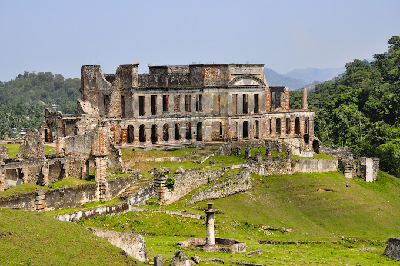
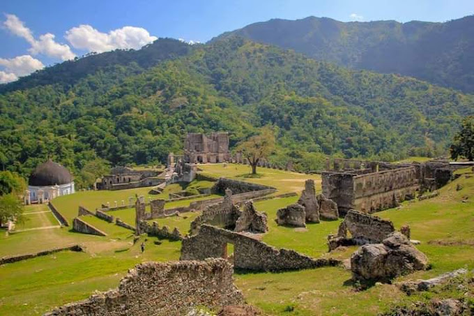

Ministère du tourisme
Ministère du tourismePalais Sans-Souci
- 
- 
Le Palais Sans-Souci est un palais historique situé dans la ville de Milot, dans le département du Nord en Haïti. Construit à la fin du XVIIIe siècle, le palais était autrefois la résidence du roi Henri Christophe, l'un des leaders de la révolution haïtienne et fondateur du royaume de Haïti. Le Palais Sans-Souci est considéré comme l'un des plus beaux exemples d'architecture coloniale en Haïti, avec des éléments de style néoclassique et des influences caribéennes. Le palais est construit en pierre et est orné de sculptures et de décorations élaborées. Malheureusement, le palais a été gravement endommagé par un tremblement de terre en 1842 et n'a jamais été restauré. Cependant, les visiteurs peuvent toujours admirer les vestiges de ce qui était autrefois l'une des structures les plus magnifiques de l'histoire haïtienne. Le Palais Sans-Souci est également situé à proximité de la Citadelle Laferrière, un autre monument historique important en Haïti. Les deux sites sont souvent visités ensemble et sont considérés comme des destinations incontournables pour les touristes qui s'intéressent à l'histoire et à la culture haïtiennes